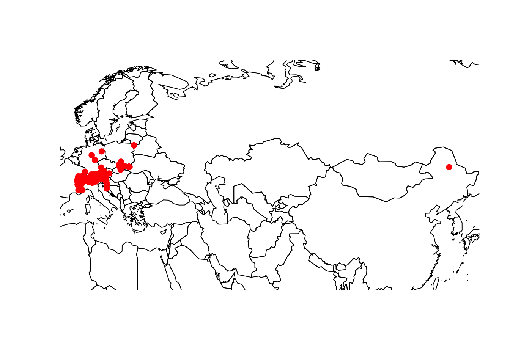
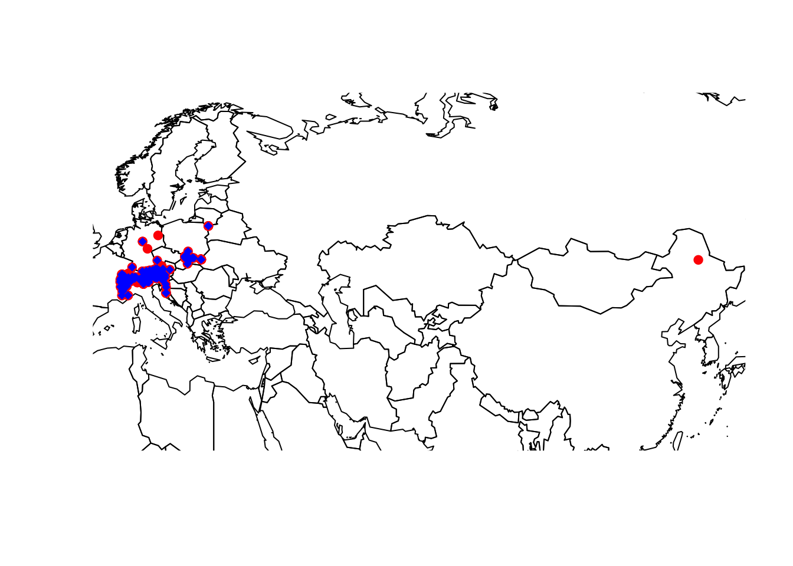

Before we start into this series of practicals, you should spend a minute thinking about your folder structures. I recommend having separate folders for your R scripts and for your data, potentially also a results folder. Today, we will learn about different kinds of data we need for species distribution modelling and will download different data. For improved overview, you may consider to make different subfolders within your data folder to structure this further.
Many different types of biodiversity data exist, e.g. from standardised monitoring schemes, citizen science platforms, or expert knowledge. Each comes with own challenges. Here, we will concentrate on GBIF as publicly available source for terrestrial species occurrence data.
GBIF stands for Global Biodiversity Information Facility. GBIF defines itself as “an international network and research infrastructure funded by the world’s governments and aimed at providing anyone, anywhere, open access to data about all types of life on Earth”. GBIF contains worldwide point records from observations as well as museum records or other contributions. The data are thus not standardised and often it is unclear which spatial resolution the data represent. To understand this, let’s look at some example under https://www.gbif.org/.
We will use the package rgbif to search and retrieve data from GBIF. A good tutorial to this package is offered here. Remember that we can install new packages with the function install.packages(). Alternatively, the dismo package offers the function gbif() to download gbif records. Robert Hijmans, who wrote the raster and the dismo package, also offers great tutorials on his website: http://rspatial.org.
library(rgbif)
# Check out the number of occurrences found in GBIF:
occ_count()## [1] 1582903944# number of observations:
occ_count(basisOfRecord='OBSERVATION')## [1] 19488039# number of occurrences reported for Germany:
occ_count(country=isocodes[grep("Germany", isocodes$name), "code"])## [1] 40813393# number of observations reported for Germany:
occ_count(country=isocodes[grep("Germany", isocodes$name), "code"],basisOfRecord='OBSERVATION')## [1] 298002As example, I picked the Alpine shrew (Sorex alpinus) for today, a small mammal species occurring in Central and Suuth-Eastern European mountain ranges. Its conservation status is near threatened (Link to IUCN redlist).
Figure 1. The Alpine shrew (Sorex alpinus). Picture by Dr. Richard Kraft, downloaded from https://kleinsaeuger.at/sorex-alpinus.html.
We first check whether any synonyms exist and how many records exist for the species. Download will be slow for high numbers of records.
# Check for synonyms
name_suggest(q='Sorex alpinus', rank='species')
# Check number of records
occ_search(scientificName = "Sorex alpinus", limit = 10)Now, let’s download the records and plot them. Of course, the map will only help us judging the data quality if we have a rough idea where the species should occur. So, look up the species on the web first!
gbif_shrew <- occ_search(scientificName = "Sorex alpinus")
# We are just interested in the data frame containing the records
gbif_shrew <- gbif_shrew$data
library(maptools)
data(wrld_simpl)
plot(wrld_simpl,xlim=c(5,130), ylim=c(40,55))
points(gbif_shrew$decimalLongitude, gbif_shrew$decimalLatitude, col='red', pch=19)
You should always critically assess the quality of your data. This also holds true for GBIF data. Look at the map again, do all records look plausible?
Not all coordinates seem to be correct, and we thus need to cross-check these. Robert Hijmans provides some code in his dismo tutorials. We will here use the new package CoordinateCleaner (Zizka et al. (2019); see tutorials here). The function clean_coordinates() allows cleaning geographic coordinates using different cross-checks. Here, we first compare whether the coordinates for each entry match the country code provided for each entry and are no outliers.
library(CoordinateCleaner)
# We use only those data entries with coordinate information
gbif_shrew <- subset(gbif_shrew, !is.na(decimalLatitude))
# We now clean the coordinates and check for outliers - see ?clean_coordinates for more options
cl_gbif_shrew <- clean_coordinates(gbif_shrew, lon="decimalLongitude", lat="decimalLatitude", countries="countryCode", tests=c("centroids", "outliers", "duplicates", "institutions"), inst_rad = 10000)
plot(wrld_simpl,xlim=c(5,130), ylim=c(40,55))
points(gbif_shrew$decimalLongitude, gbif_shrew$decimalLatitude, col='red', pch=19)
points(gbif_shrew$decimalLongitude[cl_gbif_shrew$.summary], gbif_shrew$decimalLatitude[cl_gbif_shrew$.summary], col='blue', pch=18)
gbif_shrew <- gbif_shrew[cl_gbif_shrew$.summary,]
Exercise:
Look up the options in clean_coordinates() and think about why I chose the specific tests and options.
Have a look at Zizka et al. (2019) and the examples by Robert Hijmans (http://rspatial.org) for finding out about other typical problems with GBIF and how to deal with these.
Finally, save your data, for example by writing the final data frame to file or by saving the R object(s).
save(gbif_shrew,file='data/gbif_shrew.RData')Exercise:
Pick a species of your choice, look it up on the web, and then download and clean the GBIF data. Be careful with very large data sets. Here, you may consider limiting the geographic area from which to get records from. Check out the arguments “decimalLatitude” and “decimalLongitude” in occ_search().
Zizka, Alexander, Daniele Silvestro, Tobias Andermann, Josue Azevedo, Camila Duarte Ritter, Daniel Edler, Harith Farooq, et al. 2019. “CoordinateCleaner : Standardized Cleaning of Occurrence Records from Biological Collection Databases.” Methods in Ecology and Evolution 10 (5): 744–51. https://doi.org/10.1111/2041-210x.13152.